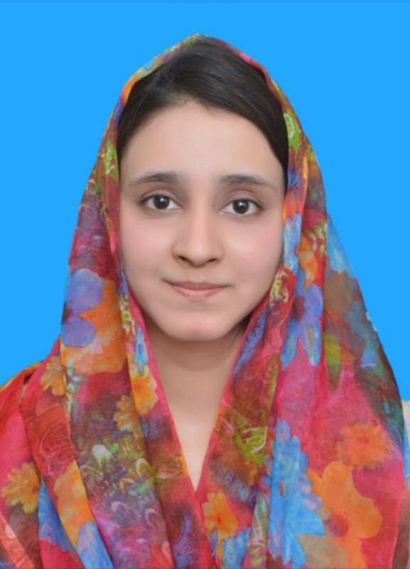

Musculoskeletal rehabilitation
Movement restoration through assessment-led exercise and supervised manual therapy.

Maliha Masud, PT, DPT
Early-career physiotherapist delivering supervised musculoskeletal, neurological and post-operative rehabilitation at Madina Teaching Hospital. Ready to adopt the registration pathway required for a job offer abroad.
Evidence-informed assessment. Clear patient education. Disciplined documentation. Professional membership with PPTA and World Physiotherapy.
DPT, CGPA 3.58/4.00The University of Faisalabad
Clinical PhysiotherapistMadina Teaching Hospital
Overseas readyRegistration pathway on job offer abroad
About
I am Maliha Masud, a Doctor of Physiotherapy graduate and Clinical Physiotherapist at Madina Teaching Hospital in Faisalabad, Pakistan. My clinical work focuses on helping patients regain movement, function and confidence after musculoskeletal injury, neurological impairment and surgery.
I trained at The University of Faisalabad (2019–2024), graduating with a CGPA of 3.58/4.00. In practice I emphasise careful assessment, progressive exercise prescription, appropriate use of manual therapy and physical agents, and education that patients can actually follow at home.
I also supported clinical teaching in the physiotherapy outpatient department (October 2025–May 2026), which deepened my commitment to clear communication and professional standards. I welcome opportunities abroad and am ready to adopt the registration pathway required once a job offer is confirmed.
Clinical Interests
Movement restoration through assessment-led exercise and supervised manual therapy.
Stroke-related functional recovery and structured neurological assessment support.
Early functional mobilisation aligned with surgical and medical plans.
Research interest in trigger points in subacute hemiplegic shoulder contexts.
Adherence-focused home programmes patients can understand and continue.
Supporting students and junior interns with bedside assessment protocols.
Experience
18 Dec 2024 – Present
Madina Teaching Hospital, Faisalabad
Evaluate neuromuscular and musculoskeletal conditions and manage tailored rehabilitation protocols for diverse patient groups. Restore functional mobility through assessment, exercise therapy, manual therapy, electrotherapy modalities, documentation and multidisciplinary collaboration across MSK, neurological and post-operative pathways.
27 Oct 2025 – 27 May 2026
Madina Teaching Hospital, Faisalabad
Provided clinical instructional guidance, bedside assessment protocols and procedural demonstrations for students and junior clinical interns in the outpatient physiotherapy department.
Professional Membership
Pakistan Physical Therapy Association (PPTA) — Membership No. P14418 · Member since December 2024 · Valid until 31 December 2029.
World Physiotherapy — Member through PPTA national membership.
Education
The University of Faisalabad · 2019–2024 · CGPA 3.58/4.00
Punjab Group of Colleges · Grade A
Kindergarten Muslim Girls High School · Grade A
Research
Project title: Prevalence of myofascial trigger points in subacute hemiplegic patients’ unaffected shoulder and its association with muscle tone.
Listed outlet on prior materials: Pakistan Armed Forces Medical Journal (PAFMJ). Full bibliographic details published here once verified for public sharing.
Contact
Available for interview by video. Ready to adopt the required registration pathway on a job offer abroad, with relocation subject to visa requirements.